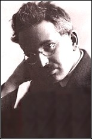

Walter Benjamin nacque a Berlino nel 1892 da una colta e benestante famiglia ebrea. Studiò a Berlino, Friburgo e a Monaco.
Nel 1919 si laureò a Berna con tesi sul "Concetto di critica d'arte nel romanticismo tedesco".
Proprio ricollegandosi alla tradizione ebraica nel saggio del 1916 "Sulla lingua in generale e sulla lingua degli uomini", Benjamin descrive una situazione originaria di perfetta corrispondenza fra parole e cose, realtà e linguaggio, conseguenza dell'attribuzione da parte di Dio dei nomi alle cose. Questa iniziale trasparenza delle cose nei nomi s'interrompe col peccato originale. L'originaria lingua divina si frantuma in una pluralità di linguaggi umani privi ormai della forza rivelatrice della lingua divina e ridotti a semplici strumenti di comunicazione.
Nel 1917 Benjamin sposò Dora Sophie Pollak da cui ebbe un figlio. Nel 1922 progettò una rivista che si sarebbe dovuta chiamare "Angelus Novus", che però non vide mai la luce. Non riuscì mai ad ottenere a cattedra universitaria probabilmente a causa della natura intrensicamente antiaccademica della sua produzione. Nel 1925 terminò il saggio sulle "Origini del dramma barocco tedesco" nel quale, sulla base dell'abissale distanza dell'umano e del divino, giunse ad una rivalutazione dell'arte allegorica e ad una corrispondente svalutazione dell'arte simbolica. Questo saggio non servì a far ottenere a Benjamin l'abilitazione in filosofia all'Università di Francoforte, che comunque continuò a lavorare come saggista e traduttore.
A partire dal 1924 si avvicinò al movimento comunista, sotto l'influenza della lettura di Storia e coscienza di classe di Gyorgy Lukas, ma non divenne mai un marxista. Scrisse per l'Enciclopedia Sovietica un articolo su Goethe e nel 1926 si recò a Mosca. Al ritornò pubblicò le sue impressioni sull'Unione Sovietica al tempo della NEP e lavorò alla traduzione dell'opera di Proust.
In quegli anni le sue ricerche andarono soprattutto verso una complessa analisi sulla modernità, svolta su più livelli. Vi rientrano la sua lettura della poesia di Baudelaire, considerato il primo artista "allegorico", le riflessioni sulla metropoli moderna e le osservazioni sulla fotografia , il cinema e in generale sull'opera d'arte nel mondo tecnico.
L'avvento del nazismo costrinse Benjamin ad abbandonare la Germania per stabilirsi in Francia. Qui divenne membro dell'Institut fur Sozialforschung, trasferitosi da Francoforte a Parigi. Del 1936 è il saggio sull'"Opera d'arte nell'epoca della sua riproducibilità tecnica", del 1939 quello su Baudelaire, entrambi pubblicati sulla rivista dell'Istituto. Il primo, forse il più celebre dei suoi scritti, esalta le potenzialità emancipative dell'arte moderna: le nuove scoperte tecniche che hanno reso possibile la perfetta riproduzione dell'opera d'arte privandola delle tradizionali caratteristiche estetiche riassumibili nel concetto di "aura" hanno modificato profondamente l'esperienza estetica dando vita ad arti di massa come il cinema.
Importanti sono anche le "Tesi sulla filosofia della storia" in cui il tradizionale concetto di tempo, caratterizzato da linerità, continuità e necessario progresso, viene rifiutato in nome di una più originaria esperienza della temporalità, in cui il rapporto tra passato e futuro è fatto d'interruzioni e rotture.
Allo scoppio della guerra Benjamin venne internato per tre mesi a Parigi; quando finalmente riuscì ad ottenere un visto per gli Stati Uniti, le truppe tedesche occupavano gran parte del suolo francese. Con altri fuggiaschi tentò di passare il confine spagnolo, ma una volta raggiunto il villaggio di frontiera essi vennero bloccati. Il 26 settembre 1940 si uccise col veleno. La maggior parte dei suoi scritti fu raccolta nel 1955 nei due volumi di "Scritti"a cura di Adorno.